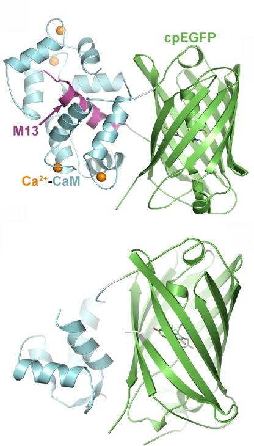
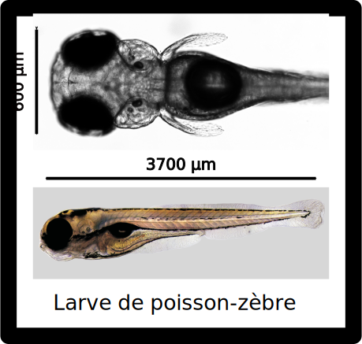

$\require{mhchem}$

Whole-brain functional imaging at cellular resolution using light-sheet microscopy
Misha B Ahrens, Michael B Orger, Drew N Robson, Jennifer M Li & Philipp J KellerPublié en mai 2013 dans NATURE METHODS
Yohan Duarte
Sujet :
Imagerie cérébrale fonctionnelle
$\downarrow$
larves de poissons-zèbres
Contexte :
$\ce{Ca^{2+}}$ imaging
| $\delta t \approx 1\mu s$ | 👍 |
| $\delta v = 1 \text{ neurone}$ | 👍 |
| $V_{\text{tot}} << V_{\text{cerveau}}$ | 👎 |
Méthode :

protéine GCaMP responsable de la fluorescence
$\ce{Ca^{2+}}$ imaging
- Méthode d'imagerie optique
- Detecte les neurones actifs
- Basé sur un indicateur fluorescent
- Sensible à la présence d'ions $\ce{Ca^{2+}}$
- Indicateur injecté ou produit par l'organisme
Montage :
Shéma expérimental utilisée
Application :

- $10^{5}$ neurones
- Produisent l'indicateur $\ce{Ca^{2+}}$ GCaMP5G
- Albinos
Résultats :
Image du cerveau d'une larve de poisson-zèbre
- $\delta t = 5~ \mu s$
- $t = 1.3~ s$
- $\delta v = 5 \times 5 \times 5~ \mu m^3$
- $V = 800 \times 600 \times 200~ \mu m^3$
Résultats :
Evolution temporelle de l'activation des neurones
- Permet d'étudier les corrélations entre les neurones
- Ne permet pas d'étudier les comportements à haute fréquence
Traitement de données :
% Misha B. Ahrens and Philipp J. Keller, HHMI/Janelia Farm, 2012-2013
% Email: ahrensm@janelia.hhmi.org, kellerp@janelia.hhmi.org
volFolder = 'X:\SiMView2\12-10-29\Dre_L1_HuCGCaMP5_0_20121029_143021.corrected\vol_aligned.1_2000\';
refFolder = 'X:\SiMView2\12-10-29\Dre_L1_HuCGCaMP5_0_20121029_143021.corrected\ref_aligned.1_2000\';
outputFolder = 'X:\SiMView2\12-10-29\Dre_L1_HuCGCaMP5_0_20121029_143021.corrected\dff_aligned.1_2000\';
volHeader = 'vol_aligned_';
refHeader = 'ref_aligned_';
outputHeader = 'dff_aligned_';
timeRange = [1 2000];
slices = 1:41;
sampling = 5;
meanFraction = 0.1;
scaling = [3 5000];
writeMIP = 1;
poolWorkers = 12;
%% processing loop
disp(' ');style="font-size: 50%; width: 115%;"
disp('Setting up processing environment');
masterClock = tic;
ticks = timeRange(1):sampling:timeRange(end);
timeArray = zeros(numel(ticks) + 2, 1);
if matlabpool('size') > 0
matlabpool('close');
end;
matlabpool(poolWorkers);
mkdir(outputFolder);
timeLabel = num2str(ticks(round(numel(ticks) / 2)), '%.5d');
frameName = [refFolder refHeader 'T' timeLabel '_P' num2str(slices(1), '%.3d') '.tif'];
frame = imread(frameName);
xSize = size(frame, 1);
ySize = size(frame, 2);
zSize = numel(slices);
referenceData = zeros(xSize, ySize, zSize, 'uint16');
parfor z = 1:zSize
currentZ = slices(z);
frameName = [refFolder refHeader 'T' timeLabel '_P' num2str(currentZ, '%.3d') '.tif'];
referenceData(:, :, z) = imread(frameName);
end;
referenceOffset = meanFraction * mean(referenceData(:));
timeArray(1) = toc(masterClock);
disp(['Processing environment set up in ' num2str(timeArray(1), '%.2f') ' seconds']);
disp(' ');
masterClock = tic;
parfor t = 1:numel(ticks)
startTime = max(ticks(1), ticks(t) - floor(sampling / 2));
if t == numel(ticks)
stopTime = timeRange(end);
- $\delta t = 5~ \mu s$
- $t = 1.3~ s$
- $\delta v = 5 \times 5 \times 5~ \mu m^3$
- $V = 800 \times 600 \times 200~ \mu m^3$
else
stopTime = ticks(t) + sampling - floor(sampling / 2) - 1;
end;
disp(['Multi-threaded processing of sequence [' num2str(startTime) ' ' num2str(stopTime) ']']);
masterClock = tic;
referenceData = zeros(xSize, ySize, zSize, 'double');
for z = 1:zSize
currentZ = slices(z);
frameName = [refFolder refHeader 'T' num2str(ticks(t), '%.5d') '_P' num2str(currentZ, '%.3d') '.tif'];
if exist(frameName, 'file') == 2
referenceData(:, :, z) = imread(frameName);
else
error(['Error: File "' frameName '" does not exist']);
end;
end;
for s = startTime:stopTime
if writeMIP
testName = [outputFolder outputHeader 'T' num2str(s, '%.5d') '_max.tif'];
else
testName = [outputFolder outputHeader 'T' num2str(s, '%.5d') '_P' num2str(slices(end), '%.3d') '.tif'];
end;
if exist(testName, 'file') == 2
disp(['Note: Skipping processing of time point ' num2str(s)]);
else
volumeData = zeros(xSize, ySize, zSize, 'double');
for z = 1:zSize
currentZ = slices(z);
frameName = [volFolder volHeader 'T' num2str(s, '%.5d') '_P' num2str(currentZ, '%.3d') '.tif'];
if exist(frameName, 'file') == 2
volumeData(:, :, z) = imread(frameName);
else
error(['Error: File "' frameName '" does not exist']);
end;
end;
signalData = uint16(((volumeData - referenceData) ./ (referenceData + referenceOffset) + scaling(1)) .* scaling(2));
for z = 1:zSize
currentZ = slices(z);
frameName = [outputFolder outputHeader 'T' num2str(s, '%.5d') '_P' num2str(currentZ, '%.3d') '.tif'];
imwrite(signalData(:, :, z), frameName, 'Compression', 'none');
end;
if writeMIP
maxName = [outputFolder outputHeader 'T' num2str(s, '%.5d') '_max.tif'];
imwrite(max(signalData, [], 3), maxName, 'Compression', 'none');
end;
end;
end;
timeArray(t + 1) = toc(masterClock);
disp(['Sequence [' num2str(startTime) ' ' num2str(stopTime) '] processed in ' num2str(timeArray(t + 1) / 60, '%.2f') ' minutes']);
end;
disp(' ');
if matlabpool('size') > 0
matlabpool('close');
end;
disp(' ');
timeArray(end) = toc(masterClock);
elapsedTime = sum(timeArray([1 end]));
disp(['Processing completed in ' num2str(elapsedTime / 60, '%.2f') ' minutes']);
disp(' ');
Code qui calcule la corélation entre différentes régions du cervau
Résultats :
hinbrain oscillator sur 4 cerveaux
hinbrain oscillator
hinbrain-spinal circuit